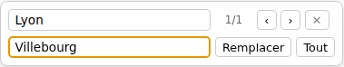

Importer et traiter
Relire et corriger un entretien
La relecture permet de vérifier les mots transcrits, de compléter un passage et de corriger les erreurs. Si un enregistrement est associé, vous pouvez écouter et modifier le texte dans la même fenêtre.
Cette page décrit le travail dans un corpus local, sur un entretien déjà importé. Pour l’ouvrir, cliquez sur le crayon de sa carte dans Importer et traiter.
Corriger le texte
- Cliquez dans la transcription à l’endroit à corriger.
- Modifiez les mots comme dans un traitement de texte : saisissez, supprimez ou sélectionnez un passage pour le remplacer.
- Relisez la phrase corrigée, puis poursuivez votre travail.
La correction est prise en compte au fil de la saisie. Vous n’avez pas à confirmer chaque phrase avec un bouton. Entrée crée un nouveau paragraphe ; cette touche n’est pas une commande d’enregistrement du texte.
Pour revenir sur la dernière correction, utilisez Édition → Annuler, ou Ctrl + Z sous Windows/Linux, Commande + Z sous macOS. Édition → Rétablir permet de rétablir une correction annulée.
Les onglets de gauche servent à travailler sur les notes, les locuteurs, les thèmes ou les données du même entretien. Une bulle au-dessus des onglets rappelle les raccourcis clavier ; vous pouvez la fermer lorsque vous n’en avez plus besoin.
Réécouter le passage
Lorsqu’un enregistrement est associé, ses commandes apparaissent au-dessus de la transcription :
- Lecture / Pause démarre ou arrête l’écoute.
- −5s et +5s reculent ou avancent de cinq secondes.
- − et + ralentissent ou accélèrent la lecture. Cliquez sur la vitesse affichée pour revenir à la vitesse normale.
- Un clic sur la bande de l’enregistrement se déplace à l’endroit choisi.
Lorsque la transcription possède des repères temporels, cliquer dans son texte permet aussi de retrouver la position correspondante dans l’enregistrement. La précision dépend des repères fournis avec la transcription.
Dans l’éditeur, appuyez deux fois rapidement sur Espace pour lancer ou arrêter la lecture sans quitter le texte. Ce raccourci agit lorsqu’un enregistrement est chargé.
Vous pouvez corriger une transcription sans enregistrement. Pour lui en associer un ou retrouver un fichier déplacé, consultez la gestion des médias.
Rechercher et remplacer des mots
- Dans l’entretien ouvert, appuyez sur Ctrl + F, ou Commande + F sous macOS.
- Saisissez le mot ou le passage à chercher. Les occurrences sont mises en évidence dans le texte.
- Utilisez les flèches pour parcourir les résultats. Entrée dans le champ de recherche passe au suivant.
- Pour une correction, remplissez Remplacer par…, puis cliquez sur Remplacer pour l’occurrence courante, ou sur Tout pour toutes les occurrences trouvées.

Avant Tout, vérifiez que le remplacement convient dans tous les contextes. Une même forme peut désigner plusieurs choses. Pour fermer la boîte, cliquez sur sa croix ou appuyez sur Échap depuis l’un de ses champs.
Vérifier l’enregistrement de votre travail
Les corrections sont enregistrées automatiquement dans le corpus. L’état affiché en haut de la fenêtre passe par modifié ou sauvegarde…, puis revient à à jour.
Attendez à jour avant de fermer l’application. Vous pouvez aussi utiliser Corpus → Enregistrer pour demander l’enregistrement sans attendre.
Votre fichier de transcription d’origine, par exemple Word, PDF ou SRT, n’est pas réécrit : les corrections sont conservées dans le corpus SonalPi. Un export permet ensuite de produire une copie de lecture du texte travaillé.
Fermer et reprendre l’entretien
Corpus dans le fil de navigation du haut ferme l’entretien et revient à ses cartes. Cliquez de nouveau sur son crayon pour le rouvrir. Pendant la session, le bouton Reprendre de la vue Corpus peut aussi retrouver l’entretien à l’endroit où vous l’avez laissé.
Fermer l’entretien ne revient pas à annuler ses corrections. Elles restent dans le corpus. Changer simplement d’espace conserve l’entretien ouvert ; Importer et traiter le retrouve sans relancer automatiquement l’écoute.